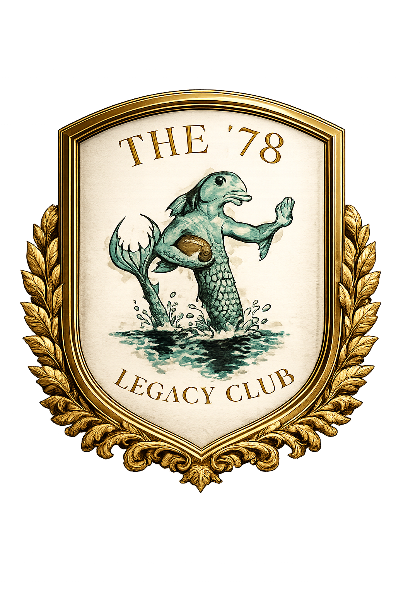
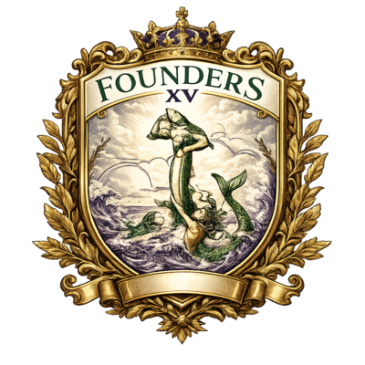

The '78 LEGACY Club
Named for the year it all started, The '78 LEGACY Club is the Grunion circle of Legacy Donors — the supporters funding the club's next era. Contributions may be tax-deductible to the extent allowed by law, and go directly to what makes a rugby club competitive: local player acquisition and retention, coaching, and club infrastructure.
This isn't a donor wall for quiet names and polite applause. It's the roll call of the stalwarts, olde boys, and stubborn friends who know that a rugby club is built by the people who keep showing up after the whistle. They are taking a place in the long line of Mer who showed up, paid in, hauled gear, hosted strangers, fed the pack, and left the club stronger than they found it. That is civilized behavior. That is Grunion behavior. That is how the deep remembers.
Member of the SBRFC, a 501(c)(3) non-profit corporation · Tax ID: 93-4659131
The Clubhouse Plaque · Engraved since 1978'78 Club Patrons
These are the Legacy Donors funding the next era of Grunion rugby — the same names engraved on the wall of the clubhouse.

Founders' XVFounders' XV
- Numbered Founders' XV jersey with your name and position
- '78 Club polo, pin & player training gear
- Exclusive sideline seating at all home matches (chairs & tent provided)
- Permanent placement on the Founders' XV plaque
- Membership in the Founders' Council (quarterly state-of-the-club briefing)
- Invitation to the annual Founders' XV get-together
- A vote toward the Founders' XV representative on the SB Rugby Football Club board
- Custom season mug (free beers at each home game)
Second XV
- Exclusive sideline seating at all home matches (chairs & tent provided)
- Season recognition on the clubhouse plaque
- '78 Club polo & pin
- A vote toward the Founders' XV representative on the SB Rugby Football Club board
- Custom season mug (half-off beers at each home game)
Supporters' Union
- '78 Club pin
- Exclusive sideline seating at all home matches (chairs & tent provided)
- A vote toward the Founders' XV representative on the SB Rugby Football Club board
- Custom season mug (half-off beers at each home game)
Sponsor a Player
- Handwritten thank-you from the player you sponsor
SBRFC is a 501(c)(3). Contributions may be tax-deductible to the extent allowed by law; the deductible amount may be reduced by the fair market value of benefits received. Please consult your tax adviser.
Ways to Give
SBRFC is a 501(c)(3) non-profit. Beyond writing a check, several tax-efficient giving methods are worth knowing about — especially if you take RMDs, hold appreciated stock, or give through a Donor Advised Fund.
Qualified Charitable Distributions
Eligible IRA owners age 70½ or older may be able to make a qualified charitable distribution directly to SBRFC. A qualifying distribution may be excluded from taxable income and may count toward a required minimum distribution. Consult your tax adviser before making a distribution.
Donor Advised Funds
Already have a DAF? Grant directly to SBRFC — we're set up to receive.
Appreciated stock
Transferring appreciated shares held more than one year directly to SBRFC may avoid capital gains tax on a sale and may allow a deduction at fair market value. ACAT transfer information available on request.
Estate & bequest designations
Name SBRFC as a beneficiary of an IRA, life insurance policy, or your estate plan. Costs nothing today; leaves a permanent mark on the club. Forever Grunion.
Employer matching gifts
Many employers match charitable contributions dollar-for-dollar (or more). Two minutes with your HR portal can double your gift.
This information is general in nature and is not tax or legal advice. Deductibility depends on your individual circumstances and may be reduced by the value of any benefits received. Please consult your tax adviser.
Ready to talk?
To pledge, ask questions, or arrange a giving conversation: Treasurer@SBRFC.com.